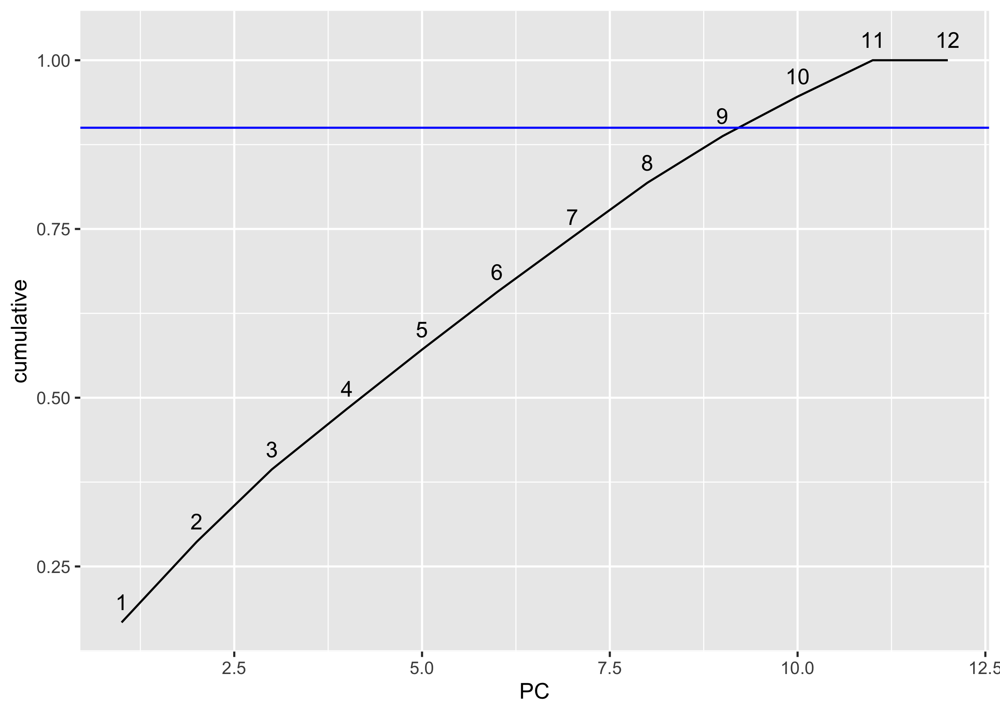
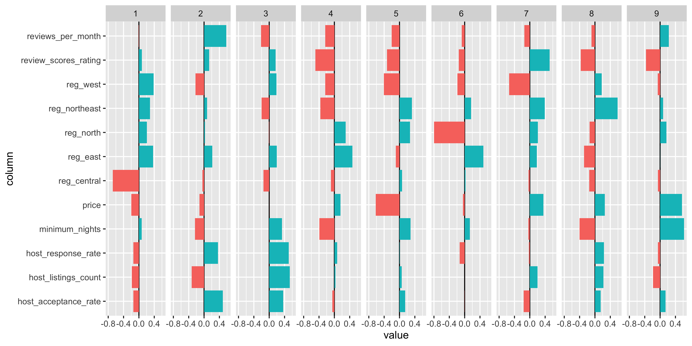
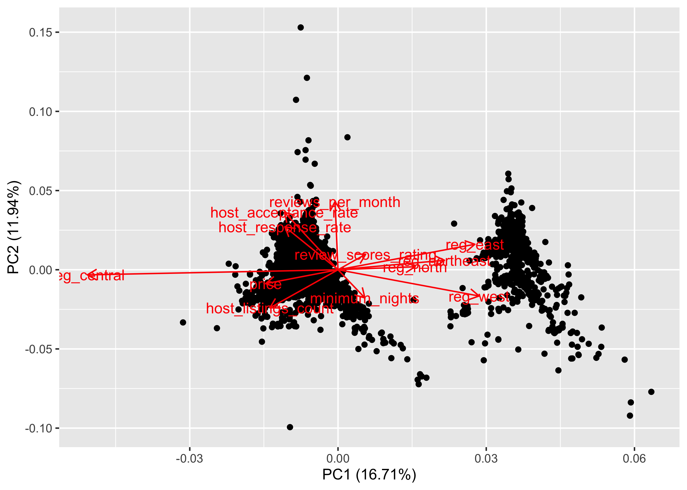
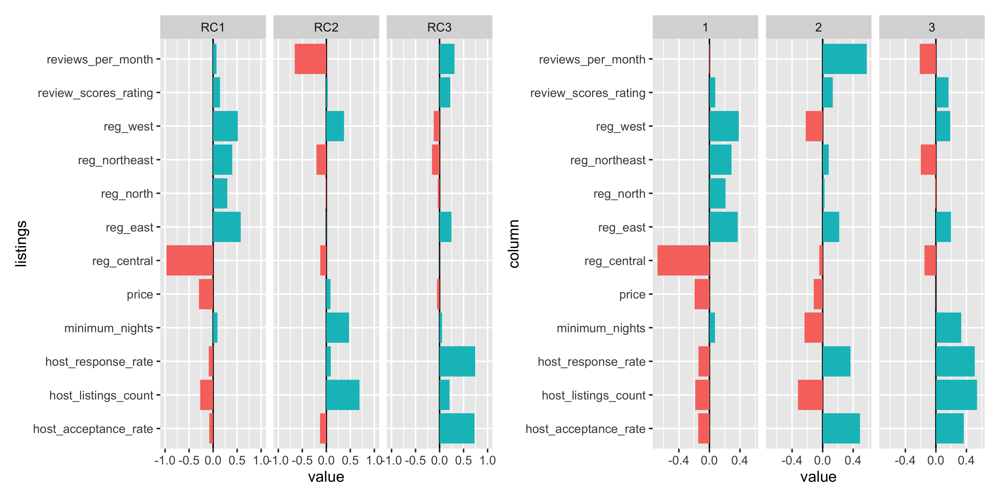

5 Principal Component Analysis (PCA)
For this section, I plan to use PCA to understand how the different variables may be correlated. This may provide some insight into the pricing and spatial distribution of the Airbnb listings, which may have been difficult to visualise from the previous sections.
5.1 Extract components & scale data
The following variables were selected: host_response_rate, host_acceptance_rate, host_listings_count, minimum_nights, price, reviews_per_month and review_scores_rating. These variables were selected mostly because they are the few continuous variables in the dataset that would potentially have some effect on one another.
pc <- listings %>%
mutate(host_response_rate = as.numeric(host_response_rate), host_acceptance_rate=as.numeric(host_acceptance_rate), host_listings_count=as.numeric(host_listings_count)) %>%
drop_na() %>%
select(minimum_nights, price, reviews_per_month, review_scores_rating, host_acceptance_rate, host_listings_count, host_response_rate) %>%
prcomp(., center=T, scale.=T)## Warning: NAs introduced by coercion
## Warning: NAs introduced by coercion## # A tibble: 7 x 4
## PC std.dev percent cumulative
## <dbl> <dbl> <dbl> <dbl>
## 1 1 1.18 0.199 0.199
## 2 2 1.14 0.185 0.385
## 3 3 1.04 0.155 0.540
## 4 4 1.01 0.146 0.685
## 5 5 0.916 0.120 0.805
## 6 6 0.843 0.101 0.907
## 7 7 0.808 0.0932 1listings2 <- listings %>%
mutate(host_response_rate = as.numeric(host_response_rate), host_acceptance_rate=as.numeric(host_acceptance_rate), host_listings_count=as.numeric(host_listings_count)) %>%
drop_na() %>%
select(minimum_nights, price, reviews_per_month, review_scores_rating, reviews_per_month, host_acceptance_rate, host_listings_count, host_response_rate, planning_region) ## Warning: NAs introduced by coercion
## Warning: NAs introduced by coercionAs I wanted to include planning areas in the components, there was a need to train the data such that they were presented as numerical (1s and 0s), which would then allow for the joining to the other components for analysis.
## Loading required package: lattice##
## Attaching package: 'caret'## The following object is masked from 'package:httr':
##
## progress## The following object is masked from 'package:purrr':
##
## liftplnreg <- listings2 %>% drop_na() %>%
select(planning_region)
dummy_model <- dummyVars(~ ., data = plnreg)
dummy_sample <- predict(dummy_model, newdata = plnreg) %>%
as_tibble()# rename columns
dummy_sample <- dummy_sample %>%
rename(reg_central = `planning_regionCentral Region`, reg_north= `planning_regionNorth Region`, reg_east = `planning_regionEast Region`, reg_west=`planning_regionWest Region`, reg_northeast=`planning_regionNorth-East Region`)pc <- cbind(listings2, dummy_sample) %>%
select(-planning_region) %>%
prcomp(., center=T, scale.=T)
tidy(pc, "pcs")## # A tibble: 12 x 4
## PC std.dev percent cumulative
## <dbl> <dbl> <dbl> <dbl>
## 1 1 1.42e+ 0 0.167 0.167
## 2 2 1.20e+ 0 0.119 0.287
## 3 3 1.13e+ 0 0.107 0.394
## 4 4 1.04e+ 0 0.0897 0.483
## 5 5 1.03e+ 0 0.0879 0.571
## 6 6 1.01e+ 0 0.0853 0.657
## 7 7 9.87e- 1 0.0812 0.738
## 8 8 9.84e- 1 0.0806 0.818
## 9 9 9.10e- 1 0.0690 0.887
## 10 10 8.39e- 1 0.0587 0.946
## 11 11 8.04e- 1 0.0539 1
## 12 12 2.37e-15 0 1tidy(pc, "pcs") %>%
ggplot(aes(x=PC, y=cumulative)) + geom_line() + geom_hline(yintercept=0.9, col="blue") + geom_text(aes(x=PC, y=cumulative, label=PC), nudge_y = 0.03)
The scree plot above shows the cumulative variance of the components and a threshold line of 90% explained variance (blue). From the plot, we can see that 90% of the variance is explained somewhere around the ninth component. Hence, I start off by keeping nine components. However, I do note that the scree plot is not exactly very clear (it seems almost linear for most part), perhaps due to the inclusion of the planning regions as components.
## # A tibble: 12 x 13
## column `1` `2` `3` `4` `5` `6` `7` `8`
## <chr> <dbl> <dbl> <dbl> <dbl> <dbl> <dbl> <dbl> <dbl>
## 1 host_… -0.146 0.488 0.364 -0.0547 0.149 -2.44e-3 -0.161 0.150
## 2 host_… -0.185 -0.322 0.538 0.0266 0.0565 -3.72e-4 0.199 0.223
## 3 host_… -0.144 0.364 0.509 0.0732 0.00633 -1.31e-1 -0.0229 0.233
## 4 minim… 0.0729 -0.238 0.333 -0.392 0.287 1.37e-1 -0.0390 -0.401
## 5 price -0.196 -0.118 -0.00115 0.159 -0.620 -4.46e-2 0.356 0.257
## 6 reg_c… -0.680 -0.0432 -0.148 -0.0905 0.0682 2.37e-2 -0.0345 -0.148
## 7 reg_e… 0.371 0.216 0.197 0.473 -0.0954 4.86e-1 0.184 -0.285
## 8 reg_n… 0.209 0.0256 -0.0106 0.295 0.273 -7.96e-1 0.212 -0.140
## 9 reg_n… 0.289 0.0801 -0.198 -0.365 0.326 1.66e-1 0.388 0.589
## 10 reg_w… 0.383 -0.222 0.189 -0.237 -0.408 -1.90e-1 -0.537 0.176
## 11 revie… 0.0751 0.132 0.166 -0.496 -0.324 -1.53e-1 0.517 -0.372
## 12 revie… -0.00806 0.577 -0.213 -0.239 -0.206 -7.39e-2 -0.141 -0.0901
## # … with 4 more variables: `9` <dbl>, `10` <dbl>, `11` <dbl>, `12` <dbl>tidy(pc, "variables") %>%
filter(PC < 10) %>%
ggplot(aes(x=column, y=value))+
geom_hline(yintercept = 0) +
geom_col(aes(fill=(value>=0)), show.legend = FALSE)+
coord_flip() +
facet_grid(~PC)
The first component shows that for a positive value for all planning regions other than the central region, reg_central showed a very low value. This suggests that the central region is very different from the other regions, and is perhaps a reflection of the number of listings that are within the central region, which is way more than in other regions. price also showed a low value, which probably suggests that prices are significantly different in the central region as compared to the other regions. Althought we established earlier that price difference were marginal, it could be that this model takes into account the outliers in the Southern Islands, which cost almost $10,000 per night. This amount is nearly 100 times the mean price of an Airbnb in Singapore. We also see a correlation between the host_response_rate and host_acceptance_rate with the reg_central. While these variables were not really explored earlier, it could provide important information, that the listings in the central area are more active than in other areas. Interestingly, a positive value for minimum_nights yield a negative value for reg_central but positive value for all other regions. This could mean that either the central region or the rest of Singapore is more likely to flout the rules. However, on hindsight, this could be a reflection of the sheer number of listings in the central region. Therefore, it may have a lot more listings with minimum_nights that are low as compared to the number of listings of the same kind in the other parts of Singapore. Therefore we can only conclude from the first component that the central area is very different from the other areas in terms of price, minimum_nights, host_response_rate and host_acceptance_rate.
The second component shows that a low value for minimum_nights corresponds to a high value for reviews_per_month, which makes sense because reviews would be more frequent if the length of stay is shorter. It then adds a nuance to the first component by showing that reg_west is somewhat like reg_central in terms of price, minimum_nights and host_listings_count. The correlation with price can be explained by an outlier listing in Tuas that costs almost as much as those in the Southern Islands. The high reviews_per_month is also correlated with the reg_east and east, which suggests that these regions also have a high number of listings that potentially are flouting the rules.
The third component shows that the east and west regions have the different ratings from the other regions, and does not add much more nuance from here on.
Therefore, while the scree plot suggested to keep 9 components, perhaps three would have been sufficient.

From the loadings plot I can confirm that the central region is very different from the rest of Singapore, but it is generally quite difficult to read.
5.2 PCA using varimax
fa <- cbind(listings2, dummy_sample) %>%
select(-planning_region) %>%
principal(nfactors=3, rotate="varimax")## Warning in log(det(r)): NaNs produced## In factor.stats, the correlation matrix is singular, an approximation is used## Warning in fa.stats(r = r, f = f, phi = phi, n.obs = n.obs, np.obs = np.obs, :
## In factor.stats, the correlation matrix is singular, and we could not calculate
## the beta weights for factor score estimates## Warning in principal(., nfactors = 3, rotate = "varimax"): The matrix is not
## positive semi-definite, scores found from Structure loadings## Principal Components Analysis
## Call: principal(r = ., nfactors = 3, rotate = "varimax")
## Standardized loadings (pattern matrix) based upon correlation matrix
## RC1 RC3 RC2 h2 u2 com
## minimum_nights 0.09 0.05 0.47 0.235 0.765 1.1
## price -0.30 -0.05 0.08 0.097 0.903 1.2
## reviews_per_month 0.07 0.31 -0.66 0.536 0.464 1.4
## review_scores_rating 0.14 0.22 0.03 0.072 0.928 1.7
## host_acceptance_rate -0.08 0.73 -0.13 0.554 0.446 1.1
## host_listings_count -0.27 0.21 0.69 0.589 0.411 1.5
## host_response_rate -0.09 0.74 0.09 0.564 0.436 1.1
## reg_central -0.97 0.00 -0.13 0.958 0.042 1.0
## reg_east 0.58 0.25 0.00 0.393 0.607 1.4
## reg_north 0.30 -0.04 -0.02 0.089 0.911 1.0
## reg_northeast 0.40 -0.16 -0.21 0.227 0.773 1.9
## reg_west 0.51 -0.12 0.37 0.411 0.589 1.9
##
## RC1 RC3 RC2
## SS loadings 1.99 1.38 1.36
## Proportion Var 0.17 0.11 0.11
## Cumulative Var 0.17 0.28 0.39
## Proportion Explained 0.42 0.29 0.29
## Cumulative Proportion 0.42 0.71 1.00
##
## Mean item complexity = 1.4
## Test of the hypothesis that 3 components are sufficient.
##
## The root mean square of the residuals (RMSR) is 0.11
## with the empirical chi square 6435.22 with prob < 0
##
## Fit based upon off diagonal values = 0.36fa[['loadings']] %>%
unclass() %>%
as_tibble(rownames="listings") %>%
gather(key="component", value="value", -listings) %>%
ggplot(aes(x=listings, y=value))+
geom_hline(yintercept = 0)+
geom_col(aes(fill=(value>=0)),
show.legend=FALSE)+
ylim(-1,1)+ coord_flip()+
facet_grid(~component) |
tidy(pc, "variables") %>%
filter(PC < 4) %>%
ggplot(aes(x=column, y=value))+
geom_hline(yintercept = 0) +
geom_col(aes(fill=(value>=0)), show.legend = FALSE)+
coord_flip() +
facet_grid(~PC)
Based on the previous analysis, I changed the number of components to 3 for the varimax method.
The conclusions are the same for the first component as seen from the above plot.
For the second component, we see a similar patterm that a low value for minimum_nights corresponds to a high value for reviews_per_month, which makes sense because reviews would be more frequent if the length of stay is shorter. However, we see that the west is different from the north-east and central regions in terms of reviews per month and host acceptance rate. Low reviews per month in the west suggests that a higher likelihood of flouting the rules.
For the varimax method, it shows that the east region is quite different from the other regions and it correlated with the other variables except for price. This highlights that prices in the east could be very different from the rest of Singapore.
5.3 Reflections on PCA
I find that to some extent, performing PCA was helpful in understanding and confirming which variables were correlated and which were not. Because of the added dimension, it helped me draw links between variables I did not think were related.
However the challenge was in deciding the number of components to keep. While the scree plot shows that 9 components, I found that it was not very meaningful to go beyond 3 components. My guess is that the scree plot was not a good indication because of the planning regions that I added in as variables. However, there was some useful analysis, that helped to confirm what I found in the previous section, and also gives room for further exploration into other variables that I did not really delve into for this project.